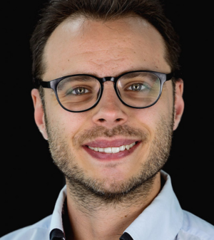

Doctoral students
No current members are listed in this category yet.
People
A growing research group working across astrodynamics, optimal guidance and control, space situational awareness, and scientific machine learning.

Lab director
Assistant Professor · Mechanical & Aerospace Engineering
Dr. D’Ambrosio directs CIRO’s research in astrodynamics, space situational awareness, optimal guidance and control, orbit determination, space-object analysis, space-environment evolution, and trustworthy machine learning for aerospace.
Full profile →No current members are listed in this category yet.
No current members are listed in this category yet.
No current members are listed in this category yet.
No current members are listed in this category yet.
No current members are listed in this category yet.